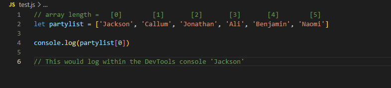

JavaScript Fundamentals
This week was all about the language of modern internet design, JavaScript. Unbeknownst to me, language is a very apt description. This week felt like learning a new way of communicating. So, let me communicate to you, what I learnt in JavaScript.
JavaScript, HTML and CSS: What Makes a Website
JavaScript is a coding language that makes interacting with a webpage possible. Without JavaScript, websites would essentially be books.
For example, HTML would be the words on the page with hyperlinks and anchors being in-page references to different books or pages. CSS would be the books styling, the colour of the pages, the texture of the page, the orginisation of photos and texts.JavaScript allows this book to talk back to the reader. It allows actions to be taken within a website by a user.
The last thing to note before continuing is a concept known as 'control flow'. Control flow is in short, how code is read. JavaScript specifically will read down a file from its first line until its last line, unless something is written into the code that changes this flow i.e. a 'loop'. Control flow is like following a recipe in a cookbook. You follow the steps from the first step until the last step, except if you need to stop your normal flow to prepare something like a sauce, or cake icing (i.e. a 'conditional'), or if you need to go back and repeat steps 3-6 of the recipe (i.e. a loop)
Types of Data in JavaScript
JavaScript allows for interaction through the manipulation of 'data' which JavaScript refers to as a 'variable'. This is important to note, as the rest of this blog is describing how JavaScript can be used to manipulate variables. The main thing to note about variables, is that they need to be defined alongside a value. For example:

Figure 1: An example of a variable.
As you can see in the figure above, the variable 'currentBalance' has been defined as being zero (ouch), but it doesn't have to be a numerical value:
Figure 2: A variable with a 'string' as a value.
Figure 2 has a variable with a string as its value. A string is just a 'string' of characters i.e. words or sentances.
Objects and Arrays
Now that we know about variables, we can discuss variables that contain 'sets' of data, rather than just one set value. Generally we need to store sets of data in JavaScript we can use an 'Array'.
Arrays
We can use arrays to store an ordered list of values. For example if we wanted to create list for a party:
Figure 3: An array of names
Now the variable 'partyList' has the values denoted in the square brackets (how we specify arrays). If we wanted to retrive the data within the array we would need to write some code like this:
Figure 4: Code used to retrive array data
Note that this list starts counting from zero. This will likely confuse me until the end of time.
So, arrays are useful for making ordered lists, but what if we didn't care so much about the order, but we did need to keep track of additional information relating to a variable? For this we can use objects.
Objects
Objects are very useful for attributing mutliple values to something, using what are known as 'Key/Value pairs'. They essentially at as sub-variables for the object:
Figure 5:An object variable, including within its keys and their values
Using objects, we can then retrive and access the specific keys within, allowing us to interact this with other data, or keep track of specific values. Like arrays we need code to pull out and access these keys, so we need to write some code like this:
Figure 6:Code used to retrive object data
Note instead of using brackets for denoting which key value we want, we use the objects name followed by a fullstop and then the keys name.
Functions
Now that we have the data we want to be able to do things with it. Functions let us do things in Javascript, and there are lots of them. The great thing about functions is that once they are declared, they can be 'called' as many times as you like. Calling a funciton just means using the previously defined function in your code. For exmaple:
Figure 7: Example of a Function
This function has been declared i.e. 'sayAfunnyJoke', and once it is called it will return in the DevTools console 'A funny joke':
Figure 8: The function has now been called
Note the empty parenthesis? These are used for defining things known as arguments, or essentially placeholders. These arguments can be made when calling a function later:

Figure 9: Calling a function with arguments
You can do a lot with functions, including making things known as loops, these are special functions that continue to be called until a defined endpoint. Essentially if you want your code to interact with itself and other inputs, you want to use functions to do it.
The DOM
Lastly, we will be be touching on the Document Object Model, or DOM. The DOM is a representation of the objects (not to be confused with JavaScript objects) and nodes on a document (i.e. a webpage or specifically the HTML). Javascript cannot manipulate webpages without using the DOM.
JavaScript can interact with the DOM by using code to select elements within the document, and changing them. There are a few reasons to do this, like wanting a specific element such as a paragraph to be highlighted when a User clicks said paragraph. This can be done by writing JavaScript that interacts with the DOM.